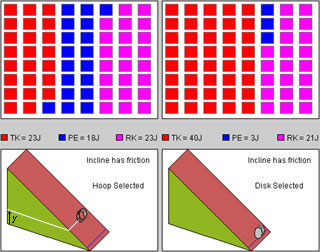
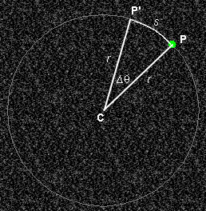

Prerequisites
Students should know the concepts of potential and kinetic energy, and speed and angular speed.
Learning Outcomes
Students will develop an understanding of the transformation of potential energy into translational and rotational kinetic energy when objects are rolling or sliding down an incline and how this transformation affects the speed with which the objects move down the incline.
Instructions
Students should know how the applet functions, as described in Help and ShowMe.
The applet should be open. The step-by-step instructions in the following text are to be done in the applet. You may need to toggle back and forth between instructions and applet if your screen space is limited.
 Mechanical Energy and its Conservation
Mechanical Energy and its Conservation
 Appendix
Appendix
 Definitions of an Angle's Radian
Measure and of Angular Velocity
Definitions of an Angle's Radian
Measure and of Angular Velocity
Underlying this Lesson is the law of mechanical energy conservation. Mechanical energy is defined as follows.
Definition. The sum of the potential, translational kinetic and rotational kinetic energies of a system is called the mechanical energy of the system. Let's denote the mechanical energy by ME. Thus,ME = PE + TK + RK .
(1)
One of the most general principles in physics is the principle of energy conservation. The law of mechanical energy conservation is a special case of this principle.
Law of Mechanical Energy Conservation. The energy of a closed mechanical system is conserved.
Comment 1. The energy of a mechanical system is mechanical energy.
A "mechanical system" is a system describable by the laws of mechanics. In particular, thermal properties do not need to be considered for such a system, and there is no internal dissipative friction leading to a transformation of mechanical into thermal energy of the system.
Comment 2. A "closed" system is one that is not interacting with anything outside the system.
We will take our system to consist of the object on the incline, the incline itself, and the entire earth and will assume that it is closed. The earth has to be part of the system because the moving object is interacting gravitationally with the earth. This interaction causes the object to accelerate down the incline. Also, the potential energy in the applet is the gravitational potential energy of the object-earth pair. For brevity's sake, one refers to this potential energy as the "potential energy of the object", but it is really the "potential energy of the object-earth pair".
Comment 3. The inclines in the applet have friction, but not dissipative friction. Dissipative friction is friction that transforms mechanical energy into thermal energy. Friction, but not dissipative friction, is necessary for objects to roll rather than just slide down an incline. The friction that makes an object roll does not do work on the object and therefore does not lead to a loss in the object's mechanical energy.
In reality, there is always at least a small amount of dissipative friction present when an object is rolling. This small amount is neglected in the applet.
Comment 4. In the system consisting of the moving object, the incline, and the earth, the object's kinetic energy is an important part of the mechanical energy of the system. However, there is no contribution from the earth's kinetic energy. Why not? Would this energy not be huge? The answer is "no" when we are working in a Lab frame rigidly attached to the earth.

Exercise 1
Reset  the
applet.
the
applet.
On the left incline, select the hoop and on the right incline the disk. Click the Friction buttons under each incline, so that each incline has friction.
Which object, the hoop or the disk, will make it to the finish line first? Make a prediction, then test it with the applet.
Exercise 2
Click Rewind  .
.
How much energy does either object have at the start?
Play the motion. Pause it before either object reaches the finish line. You should be able to see energy distributions like those in Figure 1 below. Figure 1 also shows the elevation y of the bottom of the hoop above ground level. This is not displayed by the applet.

Figure 1
How much total energy does either object have now? Write down the values of the various energies, potential and translational and rotational kinetic, of either object.
For each object separately, add these energies to get the object's total energy at this moment. How does the total energy of each object compare with that at the start? Is the law of mechanical energy conservation obeyed?
Work out the ratio (RK) / (TK) for both the hoop and the disk. Theoretically, these ratios are simple numbers. However, because of round-off error because the applet is using integer energy values only, the ratios you find may deviate slightly from the theoretical values.
Which object has the smaller ratio (RK) / (TK)? Is this the faster object? If so, why?
The last couple of questions have the following answer. The theoretical values for (RK) / (TK) for the hoop and disk are
hoop: (RK) / (TK) = 1.0 ,  (2)
(2)
disk: (RK) / (TK) = 0.5 . (3)
(3)
You may also want to try the sphere. Its theoretical value is
sphere: (RK) / (TK) = 0.4 . (4)
(4)
The translational kinetic energy of an object of mass m moving with speed v is given by
TK = ½mv2 . (5)
(5)
Therefore the more translational kinetic energy an object has the greater is its speed.
When the hoop and disk are at the same elevation y above the ground, they have the same potential energy. You can check this aproximately with the applet. (You will have to Play the applet twice, once stopping it when the hoop is at the given y and the other time stopping it when the disk is at this y.) Theoretically, the potential energy of an object of mass m at an elevation y above the ground is given by
PK = mgy , (6)
(6)
where g is the magnitude of the acceleration due to gravity. All objects in the applet have the same mass m.
So, which object will be faster at a given elevation y? Since both of them have the same potential energy at this point and had the same potential energy at the start, the same amount of potential energy will have been converted into kinetic energy for either object. However, for the disk, less of this kinetic energy will have been converted into rotational and more into translational kinetic energy than for the hoop. Since the disk has more translational kinetic energy at any elevation, it will be faster everywhere and therefore will win the race.
Of the rolling objects, which one is fastest: hoop, disk, or sphere? What would you predict on the basis of the ratios (2) to (4)? Test your prediction with the applet.
Question on Equation (6). Consider the situation of the left incline in Figure 1 above. The potential energy at this instant is listed as 18 J. The potential energy at the beginning of the motion, which is also equal to the mechanical energy, is equal to 64 J. Are these two values consistent with Equation (6), considering the y-values at the instant shown in Figure 1 and at the start of the motion? This question can only be answered approximately by judging the the size of y shown in Figure 1 and the size of y at the start.
Exercise 3.
Click Reset. Put the hoop on the left incline and the disk on the right incline. This time leave the left incline frictionless, but do add friction to the right incline.
Which object do you predict will reach the finish line first? Test your prediction with the applet?
Can you explain the outcome of the race in terms of the conversion of potential into translational and rotational kinetic energy?
Click Rewind, and Play the motion once more. Observe the yellow dot on the hoop. Is the hoop rolling or sliding down the incline?
If you Pause the motion before the hoop reaches the finish line, you should be able to observe a distribution of energies similar to those in Figure 2 below.

Figure 2
The hoop has no rotational kinetic energy at all because it is sliding, not rolling. Therefore, at a given elevation y, the hoop will clearly have more translational kinetic energy than the disk and therefore be faster and win the race.
Click Rewind, and make the second incline, which has the disk on it, frictionless also. Race the hoop against the disk, both without friction. Predict which one will win the race. Then replace the hoop with the brick.
Rotational kinetic energy is analogous to translational kinetic energy, and so are the formal expressions for the two kinds of kinetic energy. Both involve a factor measuring the inertia of an object and a factor related to how fast the object's motion is.
In the case of translational motion:
the mass measures an object's inertial resistance to being translated and the speed measures how fast the object is translating.
In the case of rotational motion:
the moment of inertia measures an object's inertial resistance to being rotated and the angular speed measures how fast the object is rotating.
To obtain the expression for rotational kinetic energy, start with Expression (5) for translational kinetic energy and replace the mass m by the moment of inertia I and the speed v by the angular speed w. Thus,
RK = ½Iw2 . (7)
(7)
Exercise 1. Make a dimensional analysis of Equation (7) to determine the SI-units of moment of inertia.
The moments of inertia for a hoop, disk, and sphere of mass m and radius r are given by the expressions
hoop: I =
mr2 . (8)
(8)
hoop: I = 0.5
mr2 . (9)
(9)
hoop: I = 0.4
mr2 . (10)
(10)
Exercise 2. Check if the units you determined for moment of inertia in Exercise 1 are consistent with Equations (8) to (10).
Exercise 3. Using Expression (10) for the moment of inertia of a sphere, what is the rotational kinetic energy of the sphere if the sphere's mass and radius are 2.0 kg and 0.10 m, respectively, and if the sphere's angular speed is 40 rad/s?
There is a review of angular speed in the Appendix titled Definitions of an Angle's Radian Measure and of Angular Speed. It is shown there that when an object of radius r is rolling without sliding its speed and angular speed are related by the equation
v = r w
. (11)
(11)
Exercise 4. Use Equation (11) and the data in Exercise 3 to calculate the translational kinetic energy of the sphere.
Check your answers to Exercises 3 and 4 by calculating the ratio (RK) / (TK) for the sphere and comparing your value with the general value quoted in Equation (4) above.
>>>>> Appendix <<<<<

The definition of the radian measure of an angle does not involve time, but is given here in a context involving motion, the same context as that used for the definition of angular speed.
The quantities needed are listed below and are illustrated in Figure A1. The Figure shows a green dot which represents a particle or point on a rotating object. The particle is assumed to be moving in a circle. If we need to deal with a rolling object, we must imagine the circle to be co-moving with the object and the following considerations to be in the reference frame in which the center of the rolling object is at rest.
The circle in which the particle or point on a rotating object is moving is thinly outlined. The center C of the circle is the vertex of the angle to be measured. We will refer to the vector from C to the particle as the radius vector. Its magnitude, i.e., the radius of the circle, is denoted r.

Figure A1
Symbols:
Radian measure of an angle. The radian measure of the angle Dq is given by the ratio
Dq = s/r.  (A1)
(A1)
Example: If s = 0.6 cm and r = 4.0 cm, then Dq = 0.6/4.0 = 0.15 rad.
Note that angles in radians can be treated like dimensionless numbers in a dimensional analysis because their measure is the ratio of two dimensionally equal quantities, namely, lengths.
Average angular speed and angular speed. The average angular speed during the time interval Dt, wav, is defined by the following ratio:
wav = Dq/Dt .
 (A2)
(A2)
The angular speed at a given instant, w, is the limit of the average angular speed as Dt goes to zero, where the time interval over which the average angular speed is calculated contains the given instant.
It is customary when dealing with angular speed to measure angles in radians. The SI-unit of angular velocity is rad/s.
Relationship Between Angular Speed and Speed. The average speed vav during the time interval Dt of the particle revolving around C is defined as the ratio
vav = s/Dt.  (A3)
(A3)
By substituting Expression (A1) for Dq into Equation (A2) and then using Definition (A3), one obtains for the average angular speed
wav =
(s/Dt)/r =
vav /r. (A4)
(A4)
This is a very useful relation. When solved for vav it becomes
vav = r wav .  (A5)
(A5)
An equation analogous to (A5) applies for the (instantaneous) speed v,
v = r w .
 (A6)
(A6)
So far, everything has been in the frame of reference in which the center C of the circle is at rest. The speed v in Equation (A6) has been the speed of a point on a circle of radius r, and this point has been moving with angular speed w around point C.
However, Equation (A6) also can be applied to a rolling object. In this case, v can be interpreted as the speed of the center C of the rolling object relative to the Lab frame while w is the same angular speed of rotation as before. The reason why Equation (A6) can be interpreted this way is as follows.
Suppose we have a rolling disk. Imagine a tape to be wound around the perimeter of the disk. This tape unrolls as the disk rolls along. A length of tape equal to the disk's circumference will unroll as the disk makes one revolution, and this is how far the center of the disk moves forward at the same time. More generally, during a time interval Dt in which a point on the perimeter of the disk moves a distance s from P to P' (see Figure A1) in the frame in which C is at rest, the center C moves forward an equal distance s relative to the Lab frame. Dividing by Dt, this implies that the speed of the point on the perimeter of the disk relative to point C is equal to the speed of point C relative to the Lab frame.
Equation (A6) when applied to a rolling object is the "no-slipping" condition because the equation was derived assuming pure rolling motion. At which point in the derivation was the assumption of rolling without slipping necessary?
Exercise. Verify that Equations (A5) and (A6) are correct dimensionally.